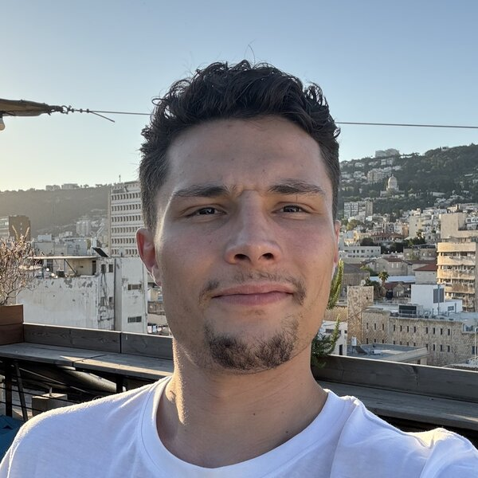

תאודור פרופיסציוב
רכש | יבוא | תפעול
חיפה
053-438-3760
Fpropistsov@gmail.com
תקציר
רכז רכש ויבוא עם ניסיון של יותר משלוש שנים, כולל ניסיון בישראל בקמעונאות המזון. מנוסה בתיאום מול ספקים בארץ ובחו"ל, בטיפול במסמכי יבוא, בניתוח נתוני מכירות ומלאי ובעבודה עם Priority ו-Retalix. בעבר עבדתי בחברת אלכוהול בינלאומית ברכש, במכרזים ובפיתוח וייצור אריזות ומוצרי קד"מ למותגים בינלאומיים. לומד מהר, אוהב לעבוד מול אנשים ולקבל החלטות. מחפש תפקיד ברכש, ביבוא, בלוגיסטיקה או בתפעול.
מיומנויות
- Priority
- Retalix Head Office
- Pricez
- MRP
- שליטה טובה באקסל
- ניהול ספקים ומו״מ
- מכרזים
- תיאום יבוא ומסמכים
- תמחור
- ניתוח נתוני מכירות ומלאי
- פיתוח אריזות ומוצרי קד"מ
- ניהול פרויקטים
ניסיון מקצועי
קשת טעמים
11.2025 – היוםרכז רכש ויבוא (התחלתי כעוזר רכש)
- הצטרפתי לחברה כעוזר רכש, ועבדתי ישירות מול סגן המנהל הכללי בניתוח מכירות, רכש ומחירים מול המתחרים בשוק.
- לאחר 4 חודשים קיבלתי קידום ואחריות על תחום היבוא בחברה.
- טיפול במסמכי יבוא ותיאום מול ספקים.
- המשימה המרכזית שלי היא שיפור וניתוח יעילות המכירות.
- איתרתי והסרתי מהמלאי מעל 6,000 מוצרים עם מכירות נמוכות או ללא מכירות בכלל.
- ניתחתי את מיקום החברה בשוק הישראלי, והתאמתי את המיצוב שלנו מול רשתות שאינן כשרות שפועלות בשבת.
- פיתחתי שיטת עבודה להסרת מוצרים שלא מספיק טובים עבור הרשת.
- אספתי נתונים על מעל 10,000 מוצרים והשלמתי אותם במערכת.
- שיפרתי את התקשורת מול מחלקות אחרות בחברה, כולל כספים, משפטית וחשבונאות.
טיב טעם
06.2025 – 11.2025מנהל הזמנות אונליין
- ניהלתי צוות של 20 עד 35 עובדים, בהתאם ליום בשבוע וכמות ההזמנות (בממוצע 200 הזמנות ביום רגיל בארבע עמדות ליקוט, ועד 350 הזמנות בימי שיא בשלוש עמדות).
- בשבועות הראשונים בתפקיד, בדקתי לעומק את תהליך הליקוט בשטח ואיתרתי את הבעיות העיקריות שפגעו ביעילות.
- שיפרתי את יעילות תהליך הליקוט וצמצמתי טעויות והחזרות, והורדתי את אי שביעות רצון הלקוחות מ־25% לפחות מ־10%.
- עבדתי מול הנהגים כדי לשפר את התיאום ולצמצם טעויות במסירת ההזמנות.
- פיתחתי שיטת עבודה למציאת הזמנות של אוכל מוכן, שקיצרה את זמן הליקוט של כל הזמנה.
- הובלתי תהליך ייעול ואוטומציה בעבודת המחלקה, ושיפרתי את התקשורת מול מחלקות אחרות.
חברת בלוגה
2020 – 2023רכש ופיתוח אריזות ומוצרי קד"מ
חברה מובילה בשוק המקומי והבינלאומי, מוסקבה, רוסיה
- ניהול רכש מול ספקים בינלאומיים, משא ומתן על חוזים, וטיפול מלא בתהליך הרכש מהדרישה ועד האספקה.
- חסכון של יותר מ־20% בתקציב השנתי באמצעות מכרזים ותנאים משופרים מול ספקים.
- פיתוח וייצור אריזות שיווקיות, מארזי מתנה וסטנדים מקרטון ומתכת למותגי אלכוהול בינלאומיים, בתקציב שנתי של מעל 300,000 דולר.
- בחירת ספקים וקבלני ייצור דרך מכרזים, כולל איתור ספקים חדשים; אישור דוגמאות ובקרת ייצור.
- איתור פריטי זכוכית ודקור, תיאום לוגיסטיקה ותקשורת מול הספקים.
- ניהול מלאי, בקרת מסמכים ותיאום משלוחים בינלאומיים.
תיק עבודות
פרויקטים שפיתחתי והפקתי בחברת בלוגה עבור מותגים בינלאומיים, 2020–2023: אריזות, מארזי מתנה, סטנדים ומוצרי קד"מ.
השכלה וקורסים
MBAאוניברסיטת אריאל, ישראל · 2023
LL.Bתואר ראשון במשפטים, אוניברסיטת סנט ג׳ון, מוסקבה · 2020
גבהיםטכנולוגיה בעיר · 2024
אולפןאולפן עציון, סיימתי בהצלחה רמה ג׳
שפות
אנגלית רמה גבוהה · עברית רמה בינונית · רוסית שפת אם